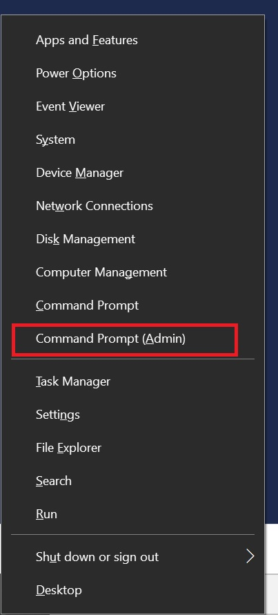
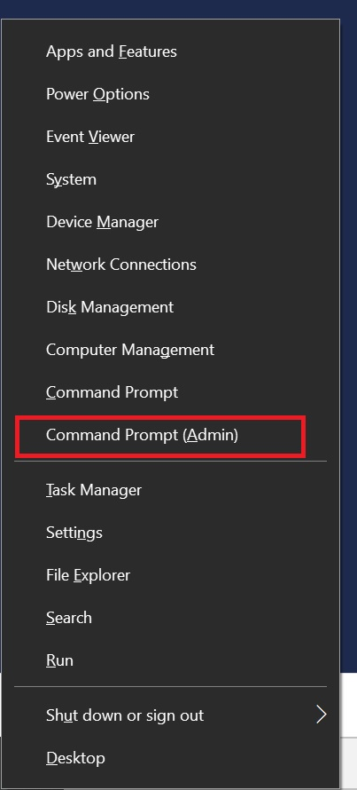

This process is easy or straightforward.
Method 1:
Enter cmd into the search bar and click run as Administrator.

Method 2:
Right click the windows icon in the bottom left and click Command Prompt (Admin)
| Home | General Fixes | Maintenance | Install/Update | Need Help? |
|---|
This process is easy or straightforward.
Method 1:
Enter cmd into the search bar and click run as Administrator.
Method 2:
Right click the windows icon in the bottom left and click Command Prompt (Admin)